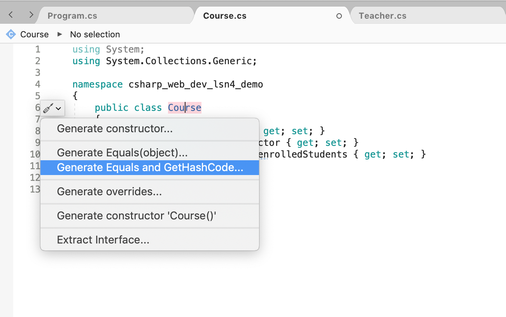

5.4. Visual Studio Generator Shortcut
Instead of cutting, pasting, and refactoring old code to ensure that you create a well-structured GetHashCode() method whenever you define your own Equals() method, you can use Visual Studio’s code generation tool!
Just right-click in your class file on the class name and follow these prompts.
Let’s use a Course class to demonstrate:
1public class Course
2{
3 public string Topic { get; set; }
4 public Teacher Instructor { get; set; }
5 public List<Student> EnrolledStudents { get; set; }
6}
In Visual Studio, right-click on the class name and select Quick Fix for Mac users or Quick Actions and Refactorings for Windows users from the menu. You can also skip this step by placing your cursor on the line with the class name and clicking on the screwdriver icon to the left.

Select the Generate Equals() and GetHashCode() option from the resulting menu:
A new menu will appear where you can make selections about which class members you want to use for the
Equals()andGetHashCode()methods. In the case of equality between twoCourseobjects, we want to establish that twoCourseobjects are equal if theTopicmembers andInstructormembers are equal. Once you select the necessary members, click Ok!
Once you click Ok, Visual Studio generates the
Equals()andGetHashCode()methods, resulting in the following class.1public class Course 2{ 3 public string Topic { get; set; } 4 public Teacher Instructor { get; set; } 5 public List<Student> EnrolledStudents { get; set; } 6 7 public override bool Equals(object obj) 8 { 9 return obj is Course course && 10 Topic == course.Topic && 11 EqualityComparer<Teacher>.Default.Equals(Instructor, course.Instructor); 12 } 13 14 public override int GetHashCode() 15 { 16 return HashCode.Combine(Topic, Instructor); 17 } 18}
In order to gain an understanding at what Visual Studio just did for us, review the section on the Equals() method and take note of the following lines of code in the code block above.
While the behavior of the code is the same as the various implementations of the Equals() methods on the previous page, Visual Studio’s method does not necessarily look similar to the ones we wrote before.
On line 9, we see some new syntax. With
is, the compiler confirms that it is possible to castobjto a variablecourseof typeCourse. If it is, the value ofcourseis set toobj. All in one line!On line 10, the value of
course.TopicandTopicis compared for equality.On line 11, the value of
course.InstructorandInstructoris compared for equality.
If all of the equality checks on lines 9, 10, and 11 come out to be true, then the generated Equals() method will return true.
5.4.1. Try It!
Try using the Visual Studio shortcut to generate a different method in the Course class!